Артефакты
Покупка и продажа артефактов
Ценообразование регулируется спросом и редкостью, поэтому кроме самостоятельных поисков можно брать задания у торговцев. На Затоне таким скупщиком является Борода и если с ним правильно выстроить отношения, например, выполнить квест "Странное свечение" и принести ему артефакт - Измененный Штурвал, он будет давать сумму выше номинальной.
| Вид | Название | Описание | Стоимость | Где найти? |
|---|---|---|---|---|
| 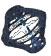 | Батарейка | Выносливость +2
Радиация +1 |
6 000 RU | Затон: Аномалия «Железный лес»,
Аномалия «Рубец»
Юпитер: Хозяйственный двор, Стоянка |
| Бенгальский огонь | Электрозащита +3
Радиация +1 |
2 000 RU | Затон: Аномалия «Железный лес» | |
| Вспышка | Электрозащита +6
Радиация +2 |
4 000 RU | Затон: Аномалия «Рубец», Аномалия «Железный
лес»
Припять: Крыша КБО «Юбилейный», Старый КБО |
|
| 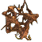 | Выверт | Радиация -3 | 8 000 RU | Затон: Земснаряд, Аномалия «Коготь», Пещеры под сгоревшим хутором |
| 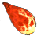 | Глаз | Зажив-е ран +4
Радиация +2 |
12 000 RU | Затон: Сгоревший хутор,
Аномалия «Котел», Аномалия «Цирк»
Юпитер: Аномалия «Пепелище», Аномалия «Битум» |
| 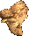 | Грави | Макс. вес +8
Радиация +2 |
12 000 RU | Затон: Земснаряд
Юпитер: Аномалия «Битум» |
| 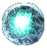 | Душа | Здоровье +2
Радиация +2 |
6 000 RU | Затон: Топь, Аномалия «Соснодуб»
Юпитер: Карьер, Аномалия «Бетонная ванна» Припять: Универмаг, Аномалия «Лоза» |
| 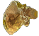 | Золотая Рыбка | Макс. вес +12
Радиация +3 |
18 000 RU | Затон: Земснаряд, Аномалия «Коготь»
Припять: Школа |
| 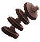 | Изменённый изолятор | Радиация +6 | 6 000 RU | Юпитер: Тоннель западнее градирни (квест "Переменное пси-излучение") |
| 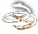 | Изменённый штурвал | Радиация +6 | 3 000 RU | Затон: Земснаряд (задание Броды - квест "Странное свечение") |
| 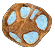 | Каменный цветок | Пси-защита +3
Радиация +1 |
3 000 RU | Затон: Пещеры под сгоревшим хутором, Аномалия «Коготь» |
| 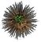 | Колобок | Здоровье +4
Радиация +2 |
12 000 RU | Затон: Топь, Аномалия «Соснодуб» |
| 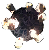 | Компас | Термозащита +3
Химзащита +3 Пси-защита +3 Элек-озащита +3 Выносливость +2 Радиация +4 |
10 000 RU | Затон: Старая баржа Ноя + выдает Борода за квест решение проблемы между бандитами и сталкерами |
| 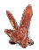 | Кристалл | Термозащита +3
Радиация +1 |
2 000 RU | Затон: Сгоревший хутор, Аномалия «Котел»,
Аномалия «Цирк»
Припять: Аномалия «Битум», Аномалия «Пепелище» |
| 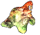 | Кровь камня | Химзащита +3
Радиация +1 |
2 000 RU | Затон: Пещеры под сгоревшим хутором, Топь,
Аномалия «Соснодуб»
Юпитер: Аномалия «Плавни» |
| 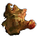 | Ломоть мяса | Химзащита +6
Радиация +2 |
4 000 RU | Затон: Пещеры под сгоревшим хутором,
Топь, Аномалия «Соснодуб»
Припять: Универмаг |
| 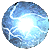 | Лунный свет | Пси-защита +6
Радиация +2 |
6 000 RU | Затон: Аномалия «Железный лес»
Юпитер: Стоянка |
| 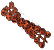 | Мамины Бусы | Зажив-е ран +2
Радиация +1 |
6 000 RU | Затон: Сгоревший хутор,
Аномалия «Котел», Аномалия «Цирк»
Юпитер: Цементный завод |
| 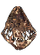 | Медуза | Радиация -2 | 4 000 RU | Затон: Земснаряд, Аномалия «Коготь»
Припять: Школа |
| 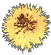 | Ночная Звезда | Макс. вес +4 кг
Радиация +1 |
6 000 RU | Затон: Земснаряд, Аномалия «Коготь»
Юпитер: Аномалия «Битум» |
| 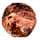 | Огненный Шар | Термозащита +6
Радиация +2 |
4 000 RU | Затон: Сгоревший хутор, Пещера под сгоревшим
хутором, Аномалия «Цирк», Аномалия «Котел»
Юпитер: Аномалия «Битум», Аномалия «Пепелище» |
| 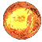 | Пламя | Зажив-е ран +6
Радиация +3 |
18 000 RU | Затон: Аномалия «Цирк»
Припять: Аномалия «Вулкан» |
| 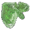 | Пузырь | Радиация -4 | 12 000 RU | Затон: Пещеры под сгоревшим хутором
Юпитер: Карьер, Аномалия «Бетонная ванна» Припять: Универмаг |
| 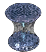 | Пустышка | Выносливость +4
Радиация +2 |
12 000 RU | Юпитер: Стоянка
Припять: Старый КБО |
| 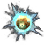 | Светляк | Здоровье +6
Радиация +3 |
18 000 RU | Затон: Топь
Юпитер: Аномалия «Плавни» Припять: Между Универмагом и Общежитием, Аномалия «Лоза» |
 |
Сердце Оазиса | Здоровье +2
Выносливость +2 Заживл. ран +2 Насыщение +1 Радиация +4 |
7 000 RU | Юпитер: Вентиляционный комплекс (задание «Оазис» дает профессор Озерский из бункера ученых) |
| 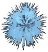 | Снежинка | Выносливость +6
Радиация +3 |
18 000 RU | Затон: Аномалия «Железный лес»
Припять: Крыша КБО «Юбилейный» |
Артефакты на заказ
Какой нужен детектор?
Детекторы "Велес" и "Сварог" - это более новые модели, которые могут обнаружить необходимые артефакты. На экране есть зеленые точки, показывающие артефакт и чем жирнее точка, тем дороже и реже артефакт.
Стоимость
За артефакты на заказ торговец Борода платит в 1.3-1-7 раза больше.
| Вид | Название | Стоимость | Где найти? |
|---|---|---|---|
| Светляк | 24 000 RU |
Затон: Топь
Юпитер: Аномалия "Плавни", Карьер, Аномалия "Бетонная Ванна" Припять: Подвал Универмага, Аномалия "Лоза" |
|
| Золотая рыбка | 24 000 RU |
Затон: Земснаряд, Аномалия «Коготь»
Юпитер: Аномалия «Битум» Припять: Школа, 3 этаж |
|
| Пламя | 24 000 RU |
Затон: Сгоревший хутор, Аномалия «Цирк»
Юпитер: Аномалия «Битум», Аномалия «Пепелище» Припять: Аномалия "Вулкан" |
|
| Снежинка | 24 000 RU |
Затон: Аномалия «Железный лес», Аномалия «Рубец»
Юпитер: Стоянка Припять: КБО «Юбилейный», Старый КБО |
|
| Пузырь | 18 000 RU |
Затон: Топь
Юпитер: Аномалия "Плавни", Карьер, Аномалия "Бетонная Ванна" Припять: Подвал Универмага, Аномалия "Лоза" |
|
| Грави | 18 000 RU |
Затон: Земснаряд, Аномалия «Коготь»
Юпитер: Аномалия «Битум» Припять: Школа, 3 этаж |
|
| Глаз | 18 000 RU |
Затон: Сгоревший хутор, Аномалия «Цирк»
Юпитер: Аномалия «Битум», Аномалия «Пепелище» Припять: Аномалия "Вулкан" |
|
| Пустышка | 18 000 RU |
Затон: Аномалия «Железный лес», Аномалия «Рубец»
Юпитер: Стоянка Припять: КБО «Юбилейный», Старый КБО |
В Припяти во всех аномалиях с наибольшим шансом можно найти все нужные артефакты.